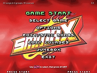
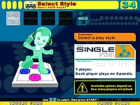
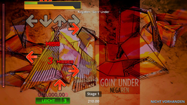
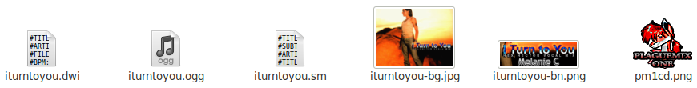

Stepmania
Dieser Artikel wurde für die folgenden Ubuntu-Versionen getestet:
Ubuntu 16.04 Xenial Xerus
Ubuntu 14.04 Trusty Tahr
Zum Verständnis dieses Artikels sind folgende Seiten hilfreich:
StepMania 
 ist ein Simulator von Konami's populärem Spiel Dance_Dance_Revolution, welches Ende der 90er Jahre die Videospielkonsolen-Welt revolutionierte. Das Spielprinzip besteht darin eine vorgegebene Schrittfolge im Takt der Musik auf einer Tanzmatte nachzutanzen. Auf dem Bildschirm laufen von unten nach oben Pfeile durch das Bild. Erreichen diese die eingerahmten Pfeile am oberen Teil des Bildschirms, springt man auf der Tanzmatte auf das vorgegebene Feld. Spaß und Bewegung sind garantiert...
ist ein Simulator von Konami's populärem Spiel Dance_Dance_Revolution, welches Ende der 90er Jahre die Videospielkonsolen-Welt revolutionierte. Das Spielprinzip besteht darin eine vorgegebene Schrittfolge im Takt der Musik auf einer Tanzmatte nachzutanzen. Auf dem Bildschirm laufen von unten nach oben Pfeile durch das Bild. Erreichen diese die eingerahmten Pfeile am oberen Teil des Bildschirms, springt man auf der Tanzmatte auf das vorgegebene Feld. Spaß und Bewegung sind garantiert...
|  |  |  |
| Menü | Menü | Spiel |
Installation¶
Vorbereitung¶
libjpeg62
 mit apturl
mit apturl
Paketliste zum Kopieren:
sudo apt-get install libjpeg62
sudo aptitude install libjpeg62
Spiel¶
Die Linux binary  von der Entwicklerseite herunterladen, entpacken [1] und nach /opt verschieben [2]. Als endgültigen Dateiordner /opt/StepMania wählen.
von der Entwicklerseite herunterladen, entpacken [1] und nach /opt verschieben [2]. Als endgültigen Dateiordner /opt/StepMania wählen.
Nach dem Einspielen der Software kann das Programm aus dem Installationsordner heraus mit dem Befehl [3] ./stepmania gestartet werden. Es empfiehlt sich einen Menüeintrag [4] vorzunehmen.
Hinweis!
Fremdpakete können das System gefährden.
Bedienung¶
Neben dem Controller werden für die Navigation, innerhalb des Programms, die Tasten Esc + ⏎ + ↑ + ↓ verwendet.
Konfiguration¶
Tanzstücke¶
Um das Spiel nutzen zu können müssen entsprechende Tanzstücke in den Stepmania-Ordner kopiert werden. Im Forum gibt es eine Auswahl einiger Musikstücke zum Herunterladen. Die Stepmania-Spieledateien besitzen die Endung .smzip. Diese .zip-Archive sind zu entpacken [1] und in den Ordner /opt/StepMania/Songs zu verschieben.
Dieser Pfad ist nach dem folgenden Schema aufgebaut: Songs/Mixordner/Liederordner/ so wie im unten zu ersehenden Beispiel:
Songs/Plaguemix Series/Dan (Old Skool Mix)
Songs/Plaguemix Series/I Turn to You
Songs/Plaguemix Series/Let Mom Sleep
Songs/Plaguemix Series/Super Trouper
Hinweis:
Diese Hierarchie muss unbedingt eingehalten werden, da StepMania die Stücke ansonsten nicht nutzt.
Neben dem Musikstück (z.B. ogg oder MP3) können die Song-Dateiformate .BMS, .SM, .KSF oder .DWI enthalten sein. Diese beinhalten die Informationen zu den Tanzschritten.
Hintergrundbilder, Videos und weitere Dateien können optional vorhanden sein und werden vom Spiel nach den Schlagwörtern durchsucht und eingebunden.

Eigene Choreografien geben dem Spiel eine persönliche Note.
Controller¶
Tanzmatte¶
Tanzmatten können mit StepMania verwendet werden. Anschließend unter "Options -> Config Key/Joy Mappings" konfigurieren. Eine Liste mit Tanzmatten gibt Aufschluss über die Kompatibilität mit StepMania.
Tastenkürzel¶
| StepMania | |
| Taste(n) | Funktion |
| Esc | Ebene hoch wechseln. |
| ⏎ | Ebene wählen. |
| ↑ + ↓ | Navigation im Menü. |
| Druck | Bildschirmfoto erstellen - Speicherort: /opt/StepMania/Screenshots |
Spiele-Infobox¶
| StepMania | |
| Genre: | Tanzspiel |
| Sprache: | |
| Veröffentlichung: | 2005+ |
| Systemvoraussetzungen: | Pentium II, Pentium III, Celeron, Athlon / >266MHz Prozessor / 64 MB RAM / 16-bit Grafikkarte mit 16MB RAM und OpenGL / Soundkarte |
| Medien: | Download |
| Läuft mit: | nativ |
- Erstellt mit Inyoka
-
 2004 – 2017 ubuntuusers.de • Einige Rechte vorbehalten
2004 – 2017 ubuntuusers.de • Einige Rechte vorbehalten
Lizenz • Kontakt • Datenschutz • Impressum • Serverstatus -
Serverhousing gespendet von